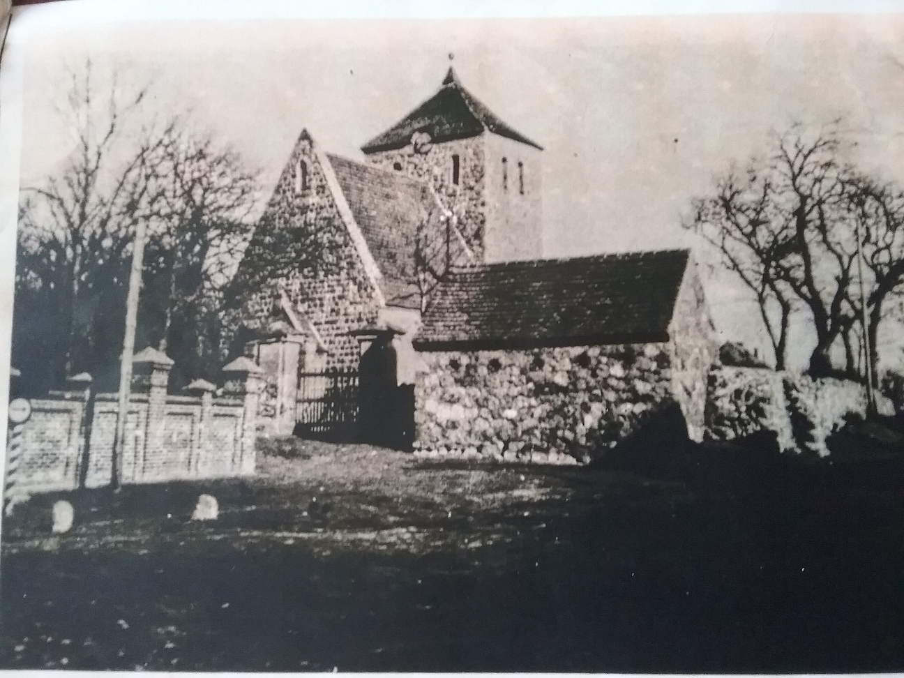

The Former Fire Department Building in Grünow

Photo: Unknown origin
The former fire department building in Grünow is a remarkable testimony to the village's local history and is now a listed building. Built of fieldstone, it was originally a functional building that served the local fire brigade.
As far as can still be determined today, access to the building originally came from the left side. Only later were two gates installed in the building, reflecting its use as a fire department building.
There hasn't been a fire brigade of its own in Grünow for about 40 years now. In the 1910s and 1920s, however, the village had a fire engine that was pulled by horses when in use. The organisation of the fire brigade at that time is interesting: it was manned and operated by the village residents during operations. The manor, in turn, was obliged to provide a suitable team of horses for the fire brigade.
The building thus tells not only of the technical development of firefighting, but also of the village life structures of that era. The interplay between village residents and the manor shows how communally fire protection was organised. Today, the listed fieldstone building recalls this long-gone era and the history of the fire brigade in Grünow.